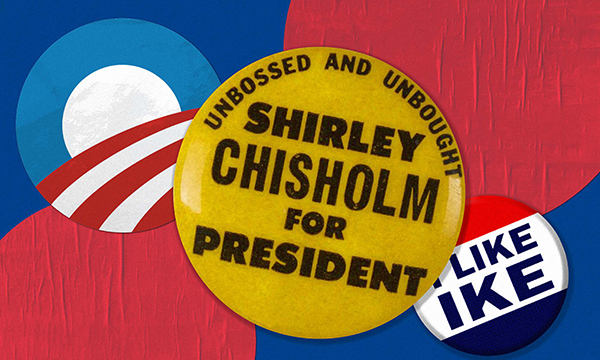
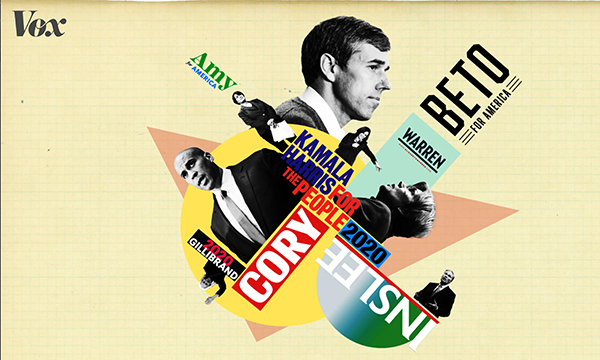
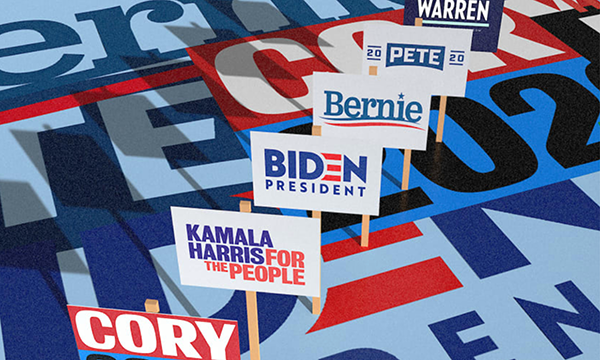
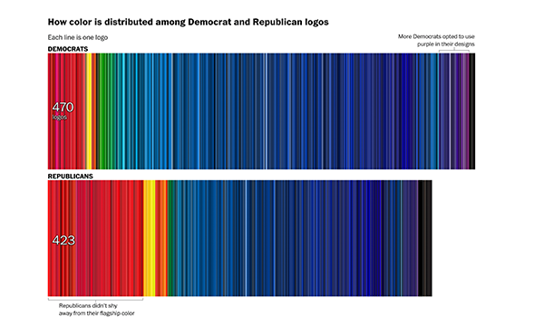
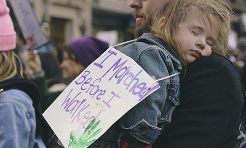

| Title | Outlet | Tags | Year | Thumbnail |
|---|---|---|---|---|
| Center for American Politics and Design | Project | Archiving | 2018-2022 |  |
| Academy Awards Database Scraping | Personal Project | Scraping, Mapping | 2021 |  |
| Critical Race Theory Analysis | Personal Project | Graphics | 2021 | |
| Working the Polls | N+1 Magazine | Photography | 2020 |  |
| What is the best political branding of all time? Experts weigh in | Fast Company | CAPD | 2020 |  |
| What the 2020 presidential candidates’ logos tell us, explained by design experts | Vox | CAPD | 2019 |  |
| The logos of all 11 Democratic presidential candidates, ranked | Fast Company | CAPD | 2019 |  |
| The 2020 Democrats' campaign logos, in graphic detail | NBC News | CAPD | 2019 | |
| In a year of political logos, campaigns of all stripes preferred blue | The Washington Post | CAPD | 2018 |  |
| A Database of Campaign Logos Is a Window into Our Politics | Hyperallergic | CAPD | 2018 | |
| Women's March 2018 NYC | Freelance | Photography | 2018 |  |
| Couture Fashion Week Paris | Freelance | Photography | 2012 |